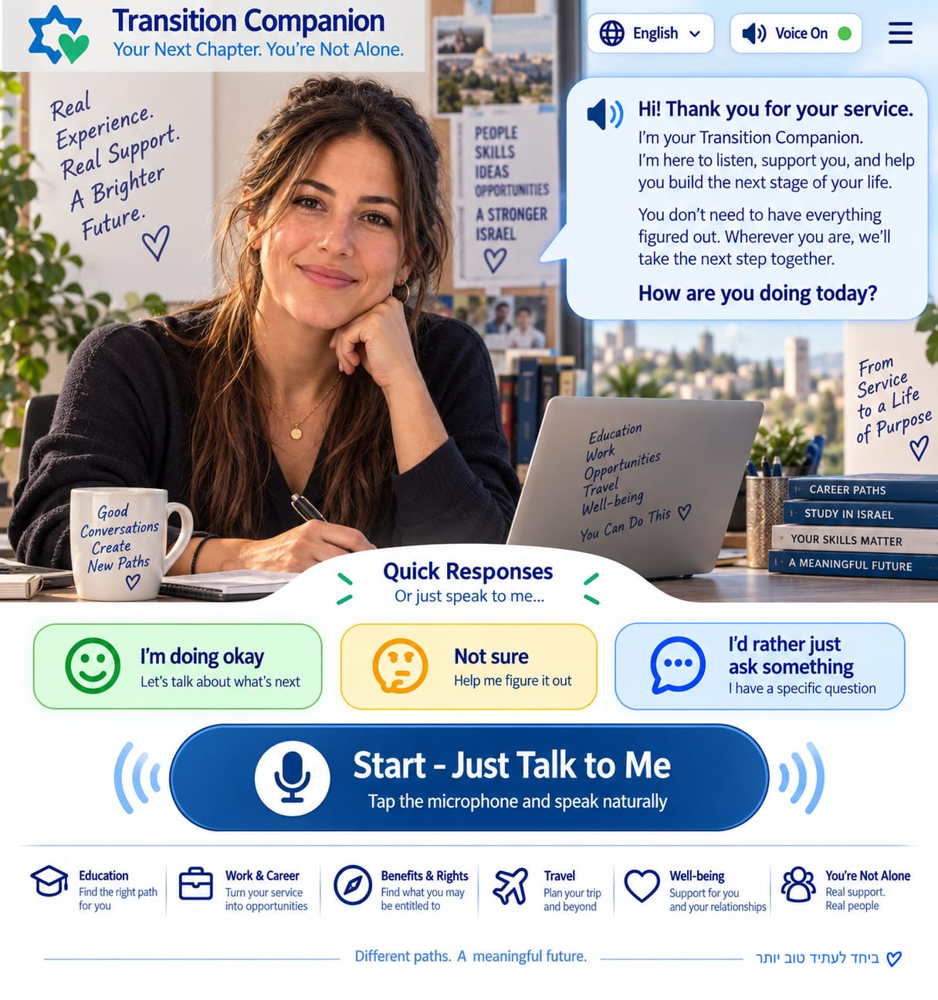

תודה על השירות שלך.
המערכת הזו נבנתה כדי ללכת איתך בתקופה שאחרי הצבא — לחשוב, לתכנן, לקבל החלטות ולבנות את הצעד הבא בקצב שלך. איך אתה מרגיש, ומה הכי חשוב לך עכשיו?
AI מקומי על הטלפון
אפשר להוריד מודל קטן שמריץ את רוב השיחות על המכשיר. ברירת המחדל היא מודל 3B בערך 2.3GB זיכרון GPU; במכשירים חלשים יותר האפליקציה בוחרת מודל 1B.
טרם נטען מודל מקומי.